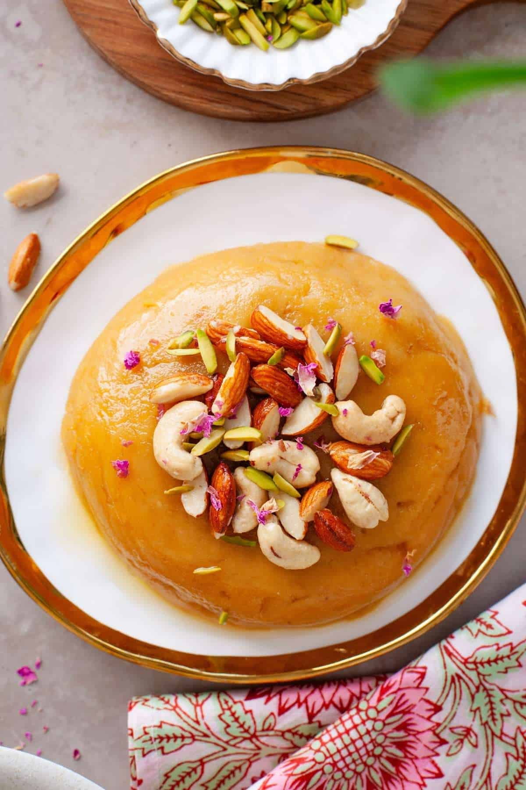

Besan Halwa

Description of this dish:
a classic, rich Indian sweet made by slow-roasting gram flour (chickpea flour) in pure ghee, then simmering it with sugar and milk or water. It has a soft, fudgy texture, a deep golden color, and a warm, nutty aroma enhanced by cardamom.
Ingredients:
- 1 cup besan (gram flour)
- ½ cup ghee
- ¾ to 1 cup sugar (adjust to taste)
- 2 cups water or milk (or a mix of both)
- ¼ tsp cardamom powder
- 2 tbsp chopped nuts (almonds, cashews, pistachios)
Steps to prepare this dish:
The following are the steps to prepare this yummy dish:
- Heat the ghee in a heavy-bottom pan or kadai on low-medium heat.
- Add the besan and roast it continuously for 10 to 12 minutes.
- Keep the flame low so the flour does not burn. Stir constantly until it turns golden-brown and smells nutty.
- Warm your water or milk in a separate pan.
- Pour the warm liquid slowly into the roasted besan. Stir fast to stop lumps from forming.
- Add the sugar and cardamom powder.
- Stir well as the mixture thickens and leaves the sides of the pan.
- Garnish with chopped nuts and serve warm.
Back to all recipes page